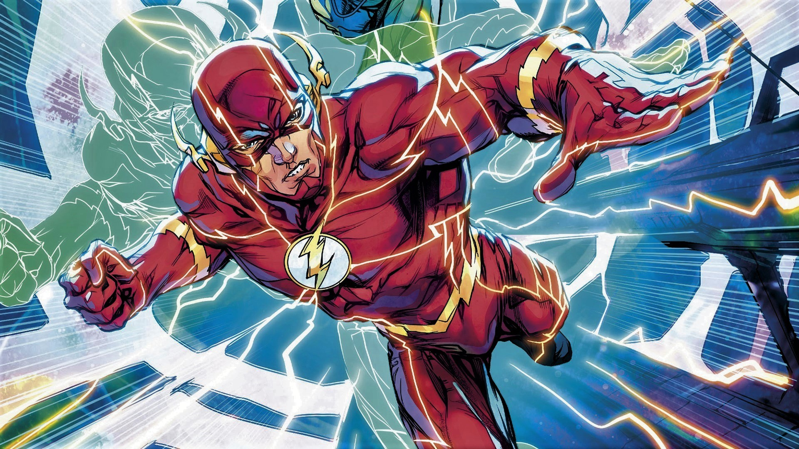
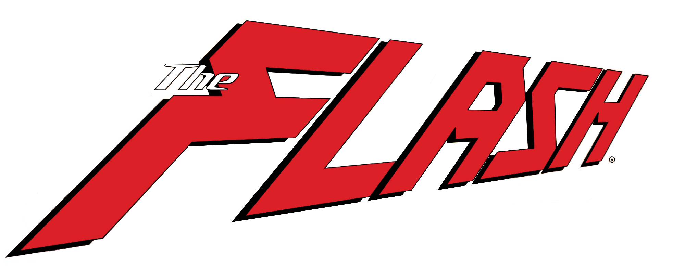
Flash
es el nombre de varios superhéroes ficticios que aparecen en DC Comics.Todas las encarnaciones del Flash poseen "súper velocidad", que incluye la capacidad de correr, moverse y pensar extremadamente rápido,
también puede atravesar la materia sólida, usar reflejos sobrehumanos y aparentemente violar ciertas leyes de la física, como superar la velocidad de la luz.
Cada encarnación de Flash ha sido un miembro clave de al menos uno de los principales equipos de DC: Sociedad de la Justicia de América, Liga de la Justicia de América, Los Jóvenes Titanes y Young Justice. Wally West y Bart Allen originalmente
fueron conocidos como Kid Flash, posteriormente asumieron el manto de Flash
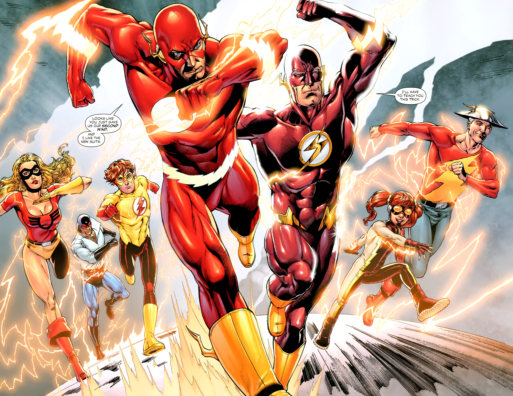
Barry Allen
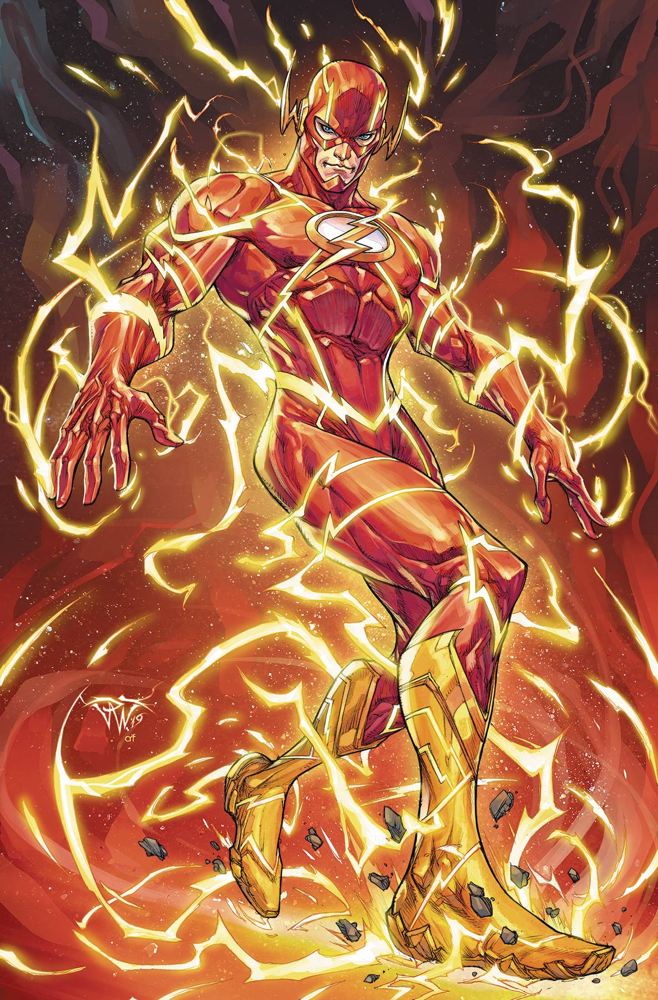
Barry Allen es un científico de la policía
con una reputación de ser muy lento y frecuentemente retrasado, lo que frustra a su prometida, Iris West. Cuando Barry era un niño, su madre fue asesinada y el padre de Barry fue culpado injustamente. En realidad, fue el Flash Reverso. Una noche, mientras trabaja hasta tarde en un nuevo caso, un rayo cae y hace añicos una caja llena de sustancias químicas no especificadas y empapa a Barry, dejándolo inconsciente temporalmente. Como resultado, Allen descubre más tarde que puede correr a velocidades sobrehumanas y posee reflejos, sentidos y curación igualmente mejorados. Más tarde se pone un traje rojo, luciendo un rayo en el pecho (que recuerda al Capitán Marvel original de Fawcett Comics), se hace llamar Flash (en honor al superhéroe que él admiraba en su infancia, Jay Garrick), y se convierte en el protector y
luchador contra el crimen disfrazado residente de Central City
Muerte
En Crisis en Tierras Infinitas Allen se retira de ser flash y se une a Iris en el siglo 30.
Después de sólo unas pocas semanas de felicidad, la Crisis en Tierras Infinitas interviene, y Allen es capturado por el Anti-Monitor y llevado a 1985; Según el Anti-Monitor, Flash era el único capaz de viajar a otros universos a voluntad, por lo que el Anti-Monitor no podía permitirle permanecer libre. Allen escapa y frustra el plan del Anti-Monitor para destruir la Tierra con un cañón antimateria
, creando un vórtice de velocidad para atraer el poder, pero muere en el proceso cuando el poder se vuelve
demasiado para su cuerpo.
Se ha dicho que Allen viaja a través del tiempo y se convierte en el mismo rayo que le da sus poderes, pero luego también se insinúa fuertemente que el alma de Barry reside en Fuerza de la Velocidad, la fuente mística y Valhalla abierta a todos los muertos velocistas, y de los cuales los vivos extraen sus asombrosos poderes. Después de la muerte de Allen, Kid Flash Wally West, su sobrino y compañero, toma el manto de Flash.

Resurrecion
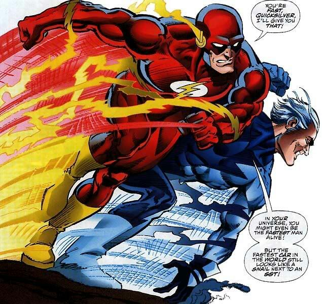
Un
amnésico Barry Allen, recordando mal su nombre como "Buried Alien"
y Speed Force como la "Hyperforce", y sorprendido de tener "forma" nuevamente,
ingresa al Universo Marvel en medio de la gran carrera para ser el "Hombre Vivo Más Rápido"
después de que los jugadores hubieran pasado el primer cruce warp, donde es descubierto por
el Runner que lo coordina y lo invita a participar en su gran carrera.
Vencer a varios otros velocistas (Pietro "Quicksilver" Maximoff, James "Speed Demon" Sanders y Makkari) es declarado el
"hombre más rápido del mundo", un título que cree que se siente "bien",
aunque nunca recupera la memoria durante su tiempo en el universo. Más tarde adoptó el alias "FastForward",
antes de regresar a su universo original con la ayuda de Makkari.
Tras casi 25 años de haber
sido declarado muerto desde la Crisis en Tierras Infinitas, Barry Allen, vuelve para encontrarse que el
mundo que conoció había cambiado, para luego ser atormentado otra vez por el Profesor Zoom, como
ocurrió durante los acontecimientos de The Flash: Renacimiento en la cual estaba una vez más arriesgando
no sólo su vida sino la de los demás velocistas como su nieto Bart Allen, su antiguo protegido,
Wally West, su amigo Jay Garrick y sus demás amigos velocistas, tanto que cada uno estuvo ligado a él a
través de la fuente de la Fuerza de la Velocidad, y que al final esto era una estrategia del Profesor Zoom
para acabar con la vida del velocista y hacerse así mismo dueño de la Fuerza de la Velocidad ya que este
había alterado la misma al crear una Fuerza de la Velocidad Negativa que incluía a los velocistas supervillanos como Hunter Zolomon, el mismo Eobard Thawne, Inercia, Savitar, entre otros.
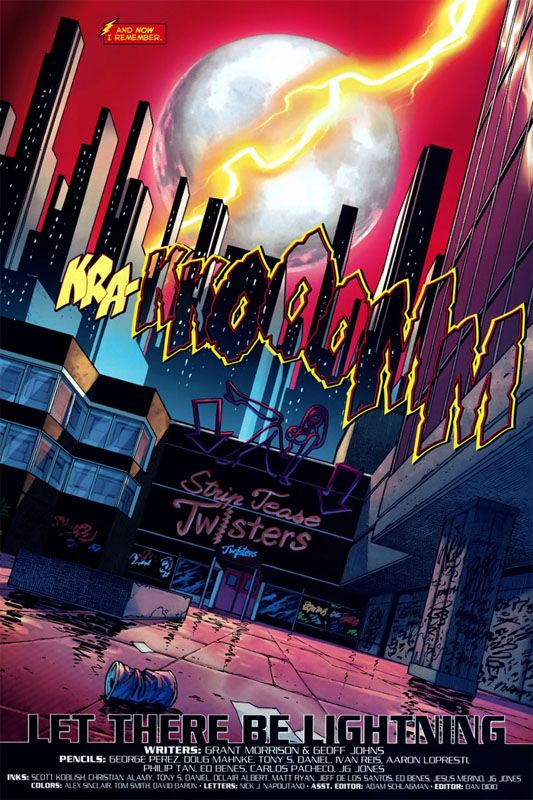
Flashpoint
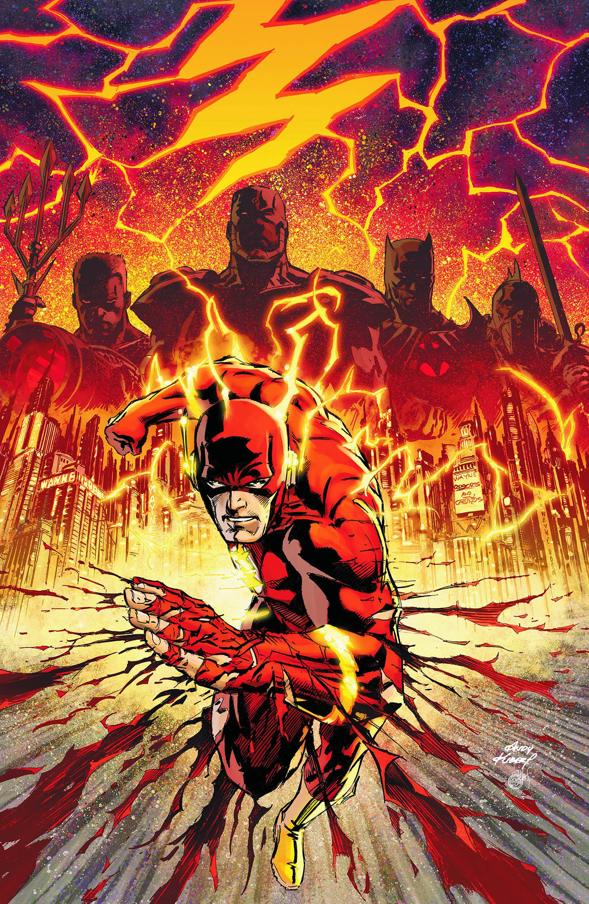
Un suceso en el cual Barry Allen por tratar de evitar la muerte de su propia madre, un crimen que por años le había costado investigar quién fue realmente el culpable de su muerte, un día como otro el mundo cambiaría de manera repentina en donde ya no es el hombre más rápido vivo, algo que antes de completar dicha revelación por parte de Hot Pursuit, el cual antes de dicha alteración temporal es obligado ante el mismo Thawne a ser perseguido en el tiempo pasado y descubrir finalmente que Thawne fue el culpable del acontecimiento de su madre fallecida,
pero tras dicho incidente días después de desaparecer Eobard Thawne y regresar a su respectivo tiempo empieza a ocurrir los sucesos de Flashpoint un evento en el cual Barry Allen al principio había pensado que había despertado al día siguiente en el mundo de manera común y corriente, pero que la diferencia era que ya no era el hombre más rápido vivo.
al darse cuenta de que este mundo alterado era el resultado (al inicio aparente hecho por el mismo Flash Reverso) cuando se da cuenta de que algunas cosas son familiares y otros no, cosa que lo lleva a la casa de la Mansión Wayne cuando descubre que el Batman de esta dimensión no es nada menos que Thomas Wayne, y el Joker es nada menos que la madre de Bruce, (que en esta realidad Bruce Wayne fue el que falleció en el asesinato por parte del ladrón y no sus padres) Martha Wayne, aunque al final, logran detenerle.
Este mundo está inmerso en una guerra entre altantes y amazonas, media Europa hundida bajo el mar, Cyborg es que sustituye a Superman en esta realidad como el campeón de América, algunos héroes no llegaron a serlo, otros villanos como Capitán Cold son supuestos héroes cuando este revela un pasado criminal tormentoso, pero cuando Barry, Thomas Wayne y otros héroes de esta realidad están decididos a frenar el conflicto atlante-amazonas, aparte de ayudar a un grupo de rebeldes que han estado ocultos en las ruinas de la ciudad de Londres, batallan contra ambos bandos con el fin de evitar el fin de la humanidad.
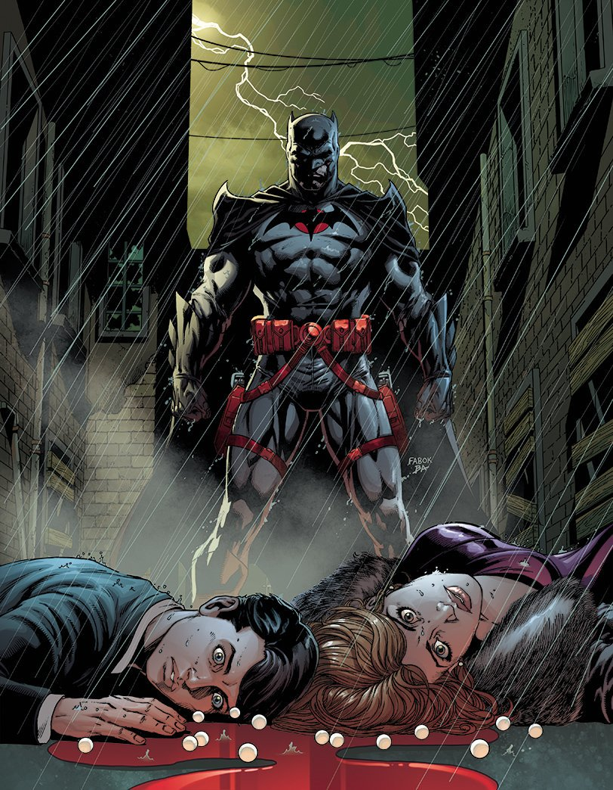
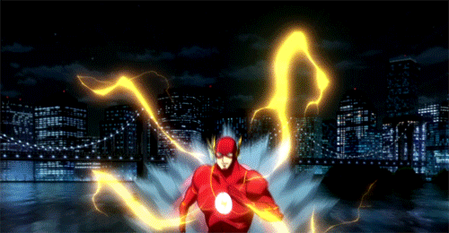
Al final, aparece una vez más Eobard Thawne, que aunque acepta la nueva realidad alterada,
sigue sin poderse dar cuenta él mismo de que dicha realidad aún de es modo debe ser modificada aún más,
y después de haber repetido el experimento que le dio sus superpoderes a Barry, decide emprender su lucha
contra Thawne no sin antes de que Thomas Wayne le clave una espada para matarle, y antes de morir, le
revela que Barry realmente fue quien daño la realidad que ha visto, al final, Barry decide correr más
rápido que nunca. En ese momento, antes de sobrepasar la velocidad de la luz, recibe energía de todos
los velocistas caídos, así como el de su propio nieto que había sido mandado al siglo XXV por la
alteración del tiempo.
Al final una misteriosa mujer le dice, que para arreglar la línea temporal,
debe dejar que suceda el acontecimiento causado por Thawne así como escoger sabiamente cual línea
temporal es la que debe marcar correctamente para su restauración, creando asi el arco de Los Nuevos 52
Villanos
Flash ha adquirido una colorida
galería de villanos. Su número incluye (pero no se limita a) varios que formaron una asociación flexible
y se refieren a sí mismos como los Renegados, desdeñando el uso del término "supervillano" o
"super-criminal". Estos delincuentes suelen tener metas inusualmente modestas para su nivel de poder
(robo u otros delitos menores)
y cada uno ha adoptado un tema específico en su equipo y métodos.
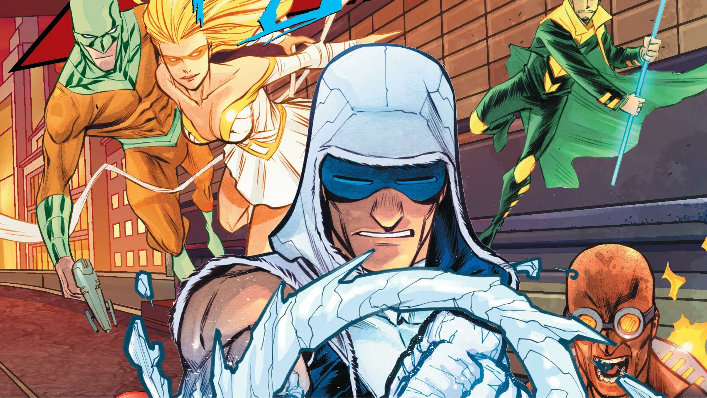
Reverse Flash
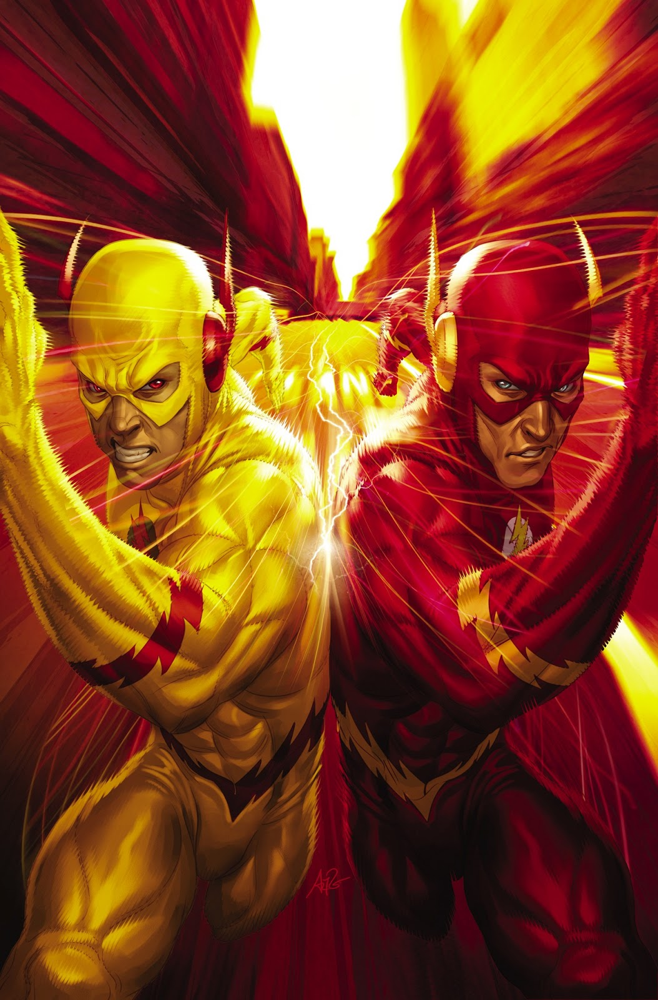
Eobard Thawne encontró una cápsula del tiempo en el siglo 25 que contenía un disfraz de Flash (Barry Allen) y con un dispositivo Tachyon amplificó la energía de velocidad del traje, dándose a sí mismo habilidades de velocista. Invirtiendo los colores del traje, adoptó el apodo de "Profesor Zoom, Flash Reverso" y se embarcó en una ola de crímenes.3Sin embargo, la cápsula del tiempo también contenía un reloj atómico, y para evitar una explosión nuclear, Flash persiguió y derrotó a Zoom, esperando saber dónde estaba el reloj. Desafortunadamente no lo hizo, pero Flash luego encontró el reloj, lo detonó de manera segura y destruyó el disfraz de Thawne.
Thawne culpó a Flash por su derrota y se obsesionó con "reemplazar" a Barry y viajó en el tiempo para vengarse.
Flash DCEU
Ezra Miller
interpreta a Barry Allen / The Flash en el DCEU. Barry es un estudiante universitario,
está trabajando en varios trabajos mientras intenta financiar su búsqueda de pruebas para
limpiar el nombre de su padre. Su traje se describe como creado utilizando el mismo material
utilizado en el casco del transbordador espacial, aunque no está claro cómo adquirió los recursos
para crearlo. Al final de los eventos de la Liga de la Justicia, tiene un trabajo como
científico forense para el departamento de policía de Central City.

Flash CW
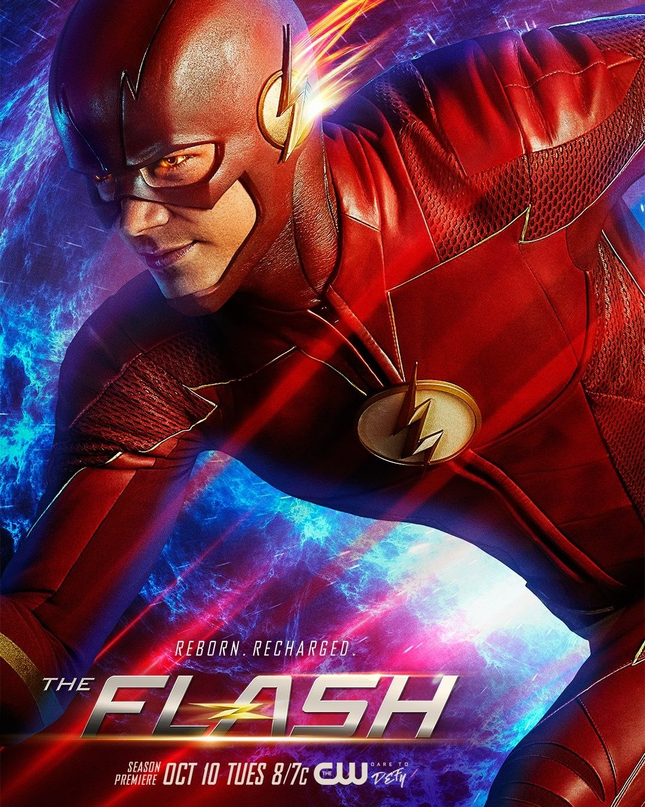
Barry
Allen interpretado por Grant Gustin tenía tan solo once años cuando su madre falleció en un incidente bizarro y aterrador, momento
en que su padre fue acusado injustamente de asesinato.
. Barry es un brillante investigador forense cuya determinación para descubrir la verdad
acerca de la muerte de su madre le ha llevado a prestar atención a todo tipo de leyendas urbanas y
avances científicos. En la actualidad despues de la explosión de un acelerador de particulas queda en coma
por 9 meses, cuando Barry despierta y descubre que su vida ha cambiado una vez más – el accidente le ha otorgado una habilidad de supervelocidad, permitiéndole desplazarse por Central City como un ángel guardián.
En los meses posteriores al accidente, la ciudad ha tenido un aumento de personas desaparecidas, muertes inexplicables y otros fenómenos peculiares. Barry tiene un nuevo propósito - utilizar su velocidad para proteger a los inocentes, sin dejar de lado su objetivo de resolver el asesinato de su madre y limpiar el nombre de su padre.
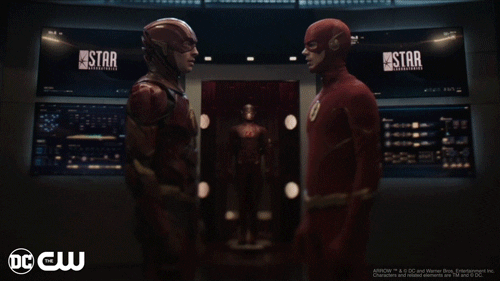<